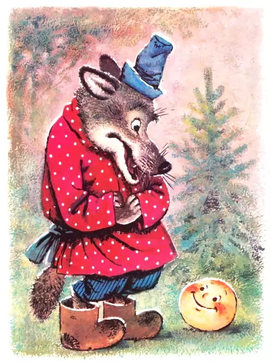

Жили-были старик со старухой.
Вот и говорит старик старухе:
— Поди-ка, старуха, по коробу поскреби,
по сусеку помети, не наскребешь ли муки на колобок.
Взяла старуха крылышко, по коробу поскребла, по сусеку помела
и наскребла муки горсти две. Замесила муку на сметане,
состряпала колобок, изжарила в масле и на окошко студить положила.
Колобок полежал, полежал, взял да и покатился — с окна на лавку,
с лавки на пол, по полу к двери, прыг через порог — да в сени,
из сеней на крыльцо, с крыльца на двор, со двора за ворота,
дальше и дальше.
А что было дальше?
Встреча с зайцем...
Встреча с волком...
Встреча с медведем...
Встреча с лисой...
В общем, колобок не выжил.
Ссылка на источникДругие сказки: